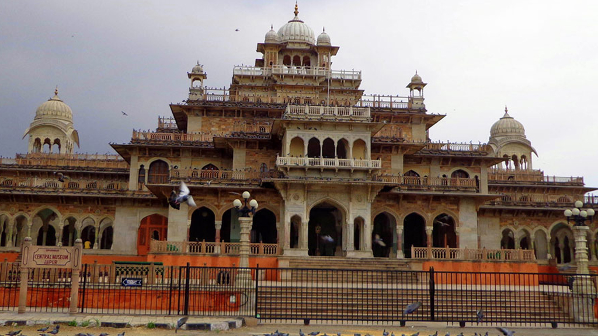
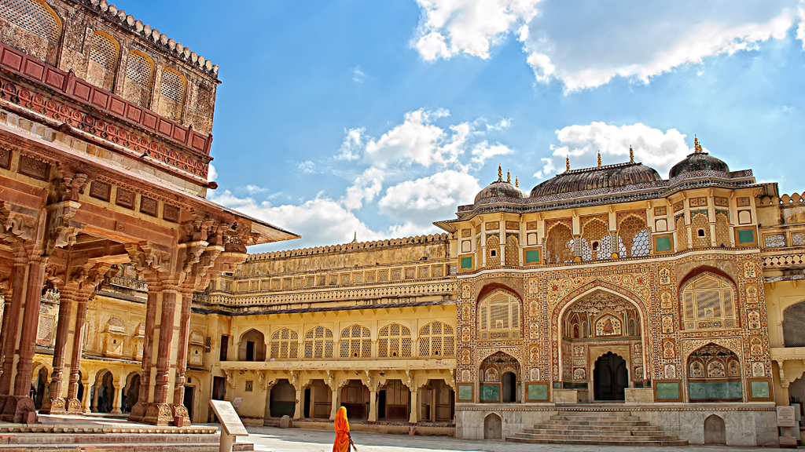
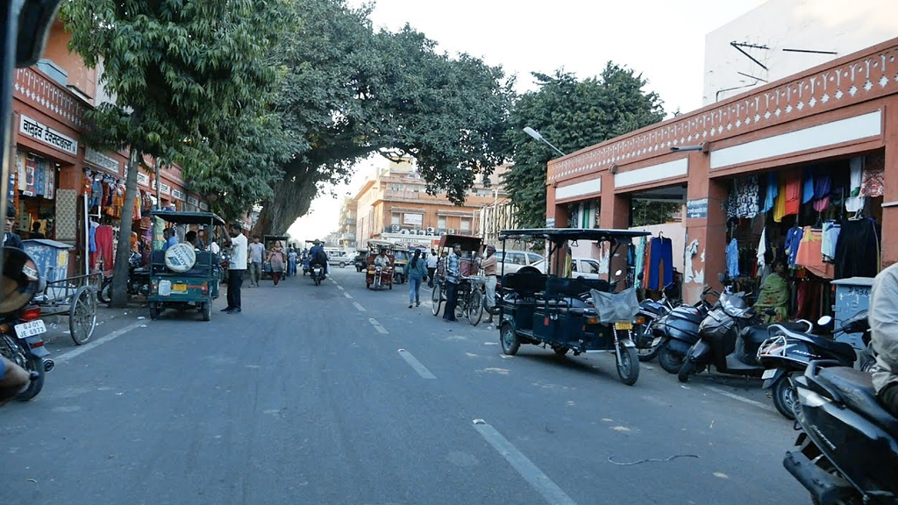
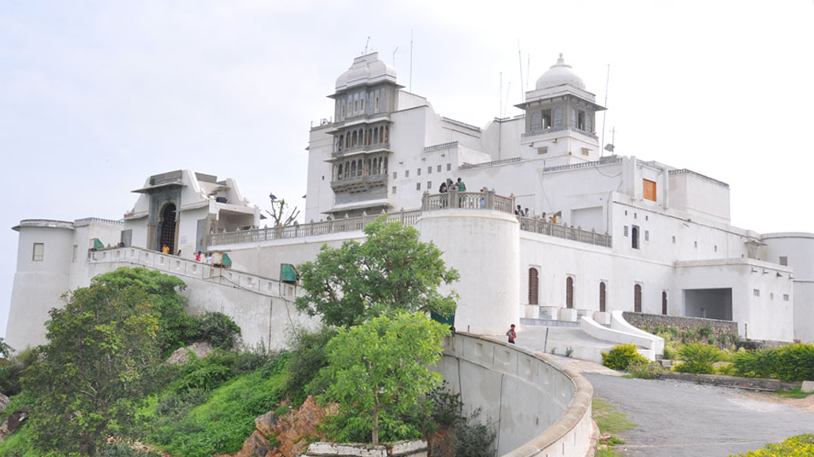
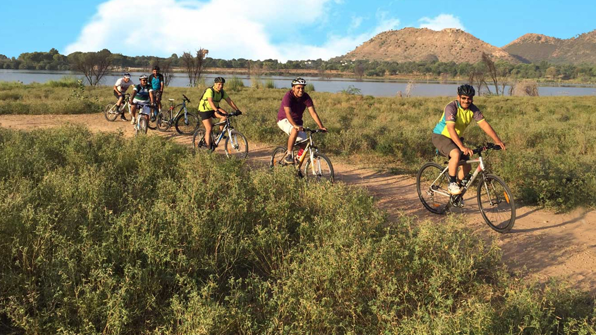
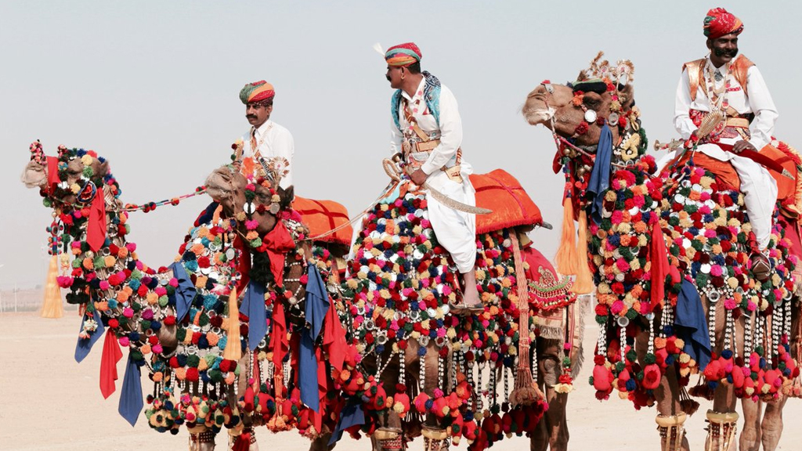
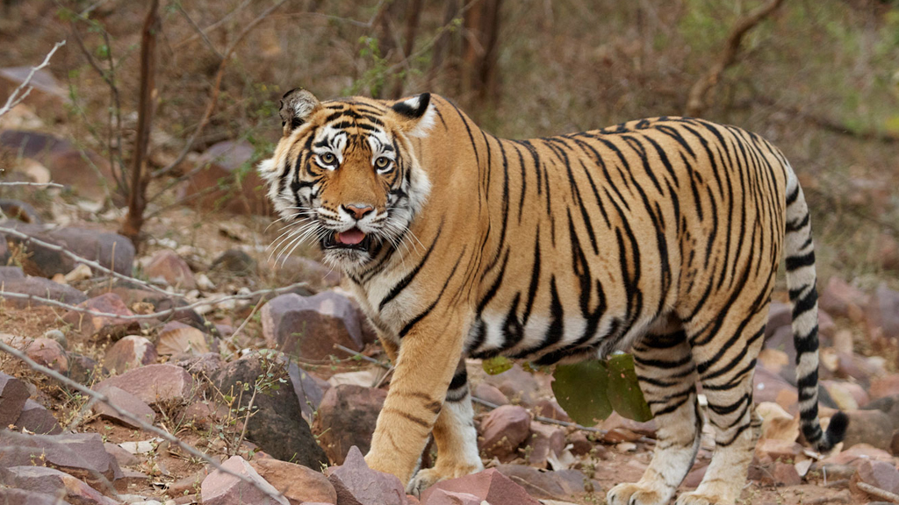

Top Things To Do
Go Deep Into the Land of the Rajputs
Our listicle covers everything you can possibly think of doing in Rajasthan. All you need is a willing spirit and Rajasthan will take care of the rest.
Travel Back in Time At Rajasthan’s Museums

Mehrangarh Museum, Jodhpur
While the Mehrangarh Fort itself is a relic of epic proportions, the museum within its walls gives you a glimpse of courtly life in Jodhpur. The Marwar-Jodhpur cultural history is represented here with artefacts ranging from the 17th to the 19th century. Take a peek at textiles, miniature paintings, armour and hand-crafted furniture.
Vintage Car Museum, Udaipur
Motor maniacs should take the short walk from Udaipur’s City Palace to this museum nearby that houses retro vehicles from a 1938 seen-seater Cadillac to a 1934 Rolls Royce Phantom. All 22 cars on display are a car enthusiasts’ dream!
Switch to Explorer Mode at the Forts of Rajasthan

Sonar Quila, Jaisalmer
It is no surprise that Jaisalmer Fort is part of UNESCO’s World Heritage Site list. Sonar Quila (Golden Fort) beckons travellers to check out its seven-storied Maharaja Mahal, Diwan-i-Khas, and Diwan-i-Am. The rare Rajput stamps, stone panel friezes, and exotic tiles makes exploring Sonar Quila an exciting tourist activity.
Mehrangarh Fort, Jodhpur
Looming over the Blue City is the glorious Mehrangarh Fort, sitting pretty on a 125m hill. From the moment you enter, via Jayapol, you will be enamoured by Sheesh Mahal, where the light plays glorious tricks on the mirror-worked walls and chandeliers. The fresco-covered Takhat Vilas is another spell-binding mansion worthy of a traveller’s time.
Kumbhalgarh Fort, Udaipur
This is easily the most impregnable fort in all of Rajasthan, and a trek within its 36m wall is a memory that will last a lifetime. Within its walls are a number of palaces, temples and mansions that hark back to a time when this fort was a force to reckon with. Don’t leave without exploring Jhalia ka Mahal, the birthplace of Maharana Pratap.
Shop Till You Drop at the Kaleidoscopic Bazaars of Rajasthan

Hathi Pol & Bada Bazaar, Udaipur
For those interested in Pichwai and Phad paintings, Hathi Pol is your best bet. This street market has shops that stock intricate wooden handicrafts, curios, and a host of local handicrafts. Bada Bazaar is all about textiles and clothing. Here you will find great deals (if your haggling skills are top-notch) on Bathik and Bandhani sarees, and camel bone jewellery.
Sadar Bazaar, Jaisalmer
For the budget-conscious shopper in the Golden City, head to Sadar Bazaar. This street market is always bustling with activity and you can pick up leather items, carpets, local handicrafts, paintings, and other knick knacks.
Nai Sarak, Jodhpur
No trip to the Blue City is complete without shopping for bandhani (traditional tie and dye) clothing/fabric at Nai Sagar. This multi-hued market is a wave of colours as shopkeepers stock all kind of local items that any traveller will fall in love with.
Mesmerize Your Sense at the Palaces (and Havelis) of Rajasthan

Monsoon Palace, Udaipur
Sajjan Garh was the royal monsoon retreat and also served as a hunting lodge. Today, it is a photographer’s dream destination because of its vantage point on Bansdara Hills, offering a bird’s-eye view of Udaipur.
Salim Singh ki Haveli, Jaisalmer
Not really a palace per se, but the palatial mansion of a Jaisalmer prime minister that still looks beautiful, 300 years on. The sky blue cupolas and arched balconies of the upper stories stands out as a hallmark of original Rajput architecture.
Thrill-seeking in Rajasthan

Bicycle Tours, Udaipur
Rajasthan is best explored on a cycle and most of the towns and villages are conveniently located if you’re riding there. Also, you get to mingle with the locals and this can transform your Rajasthani trip into a memorable experience. While most Rajasthan cities offer cycling opportunities, you should sign up for a cycle tour of Udaipur’s old city and countryside.
Paragliding & Parasailing in Udaipur, Jodhpur or Jaisalmer
For the true adrenaline junkie, Rajasthan offers you an opportunity to sail like a bird over its majestic topography. Feel the wind in your hair as you soar above Jodhpur and let the wind carry you off into the clouds. Paragliding, parasailing and para-motoring have become quite popular in Rajasthan, and if you’re up for a challenge in the skies, sign up for a tour.
Zip Lining, Jodhpur
Imagine exploring the ramparts of Mehrangarh Fort, and its lakes, from a zip line. This is easily one of the most exciting activities in Jodhpur and the zip tour lasts for 60 to 90 minutes. A perfect introduction to the burgeoning adventure lifestyle of Rajasthan.
Immerse Yourself in the Prismatic Fairs and Festivals of Rajasthan

Desert Festival, Jaisalmer
This three day festival organized by the tourism department takes place around January-February and is the perfect time to visit the Golden City. Puppeteers, snake charmers, traditional dancers, folk singers, camel races are all part of this festival that celebrates the vibrant Rajasthani folk culture.
Traverse the Jungles of Rajasthan

Desert National Park, Jaisalmer
A sanctuary unlike any other in Rajasthan, the Desert National Park was set up to conserve the Thar Desert ecosystem. The scanty vegetation and sand dunes is home the critically endangered Indian bustard, the state bird of Rajasthan. A number of migratory raptors can also be spotted here.